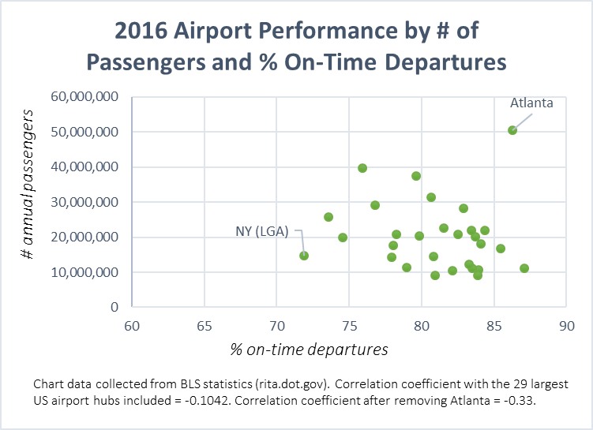

In order to investigate the role of passenger traffic as it relates to the likelihood of experienceing a flight delay, we compiled a database of the thrity US airports with the highest passenger traffic in 2016. It turns out that Atlanta had the highest amount of passenger traffic (measured in # persons boarding) in this time period. The top five airports and the 30th airport ranked by passenger traffic are listed below:
To better visualize the correlation between the amount of airport traffic and the likelihood of eperiencing a delay we took the same list of airports from above and arranged them by airport traffic (size of bubble) and average percentage of on-time flights in 2016 (indicated by color). Blue indicates on-time departures of 84% to 87% (highest value in sample), yellow indicates on-time departures of 80-84%, and red indicates on-time departures of 80% to 71% (lowest value in sample).
After getting a general visual idea of airport size (by traffic) and the three categores of on-time departure rates as shown above, we wanted to determine whether or not there was a negative or positive correlation with airport size and delayed flights in 2016. Again using the same list of the 30 US airports with the highest traffic in 2016, we plotted airline traffic against % on-time flights for 2016:

Salt Lake City (SLC) had the highest percent of on-time departures in 2016 (87.11%), followed closely by Atlanta (86.29%). The airport with the lowest % of on-time departures was New York (LGA) at 71.9%. In both charts above, we can see that Atlanta (being a the largest hub and also having a stellar record of on-time departures) might be driving down the correlation coefficient. Indeed, after removing Atlanta from the sample we can see the correlation coefficient between % on-time flights and airport traffic decrease to -0.33. Without running a regression and adding in additional explanatory variables, we could generally demonstrate a trend of decreasing % of on-time flights with increases in airport traffic. Simply put, you might be better off at avoiding a delay by selecting a smaller airport (unless you're thinking of flying out of Atlanta).
Check out our other pages to dive into more details about other considerations for choosing a flight!